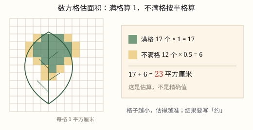
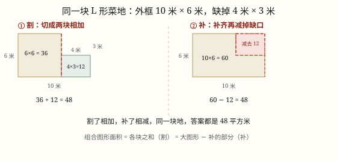

组合图形与不规则图形的面积
组合图形没有现成公式：割成几个基本图形相加，或补成一个大图形再减去多出来的部分，两条路答案一样。
| 所属主题 | 图形的认识与测量 |
|---|---|
| 所属模块 | 图形与几何 |
| 课标学段 | 第三学段（5~6年级） |
| 前置知识 | 面积、面积单位与长方形正方形的面积、平行四边形、三角形与梯形的面积、面积、面积单位与长方形正方形的面积 |
| 核心素养 | 几何直观空间观念运算能力量感应用意识 |
教材定位
人民教育出版社《2024年版》
对应五上第 6 单元「多边形的面积」：组合图形的面积。；对应五上第 6 单元「多边形的面积」：不规则图形的面积估计。
课标要求
| 图形与几何·图形的认识与测量 | 知道面积单位千米²、公顷；探索并掌握平行四边形、三角形和梯形的面积计算公式；会估计不规则图形的面积（例33）。 印刷第 32 页 行为动词：掌握 |
|---|---|
| 图形与几何·图形的认识与测量 | 结合实例认识周长和面积；探索并掌握长方形、正方形的周长和面积的计算公式。 印刷第 30 页 行为动词：掌握 |
说明
由两个或两个以上基本图形拼成的图形，叫组合图形。L 形的客厅、缺了一角的菜地、长方形接一个半圆的花坛、从长方形纸板上剪掉一个三角形的队旗，都是组合图形。它们没有属于自己的面积公式，但有两条通用的路：割和补。
割，就是沿着一条线把图形切成几个基本图形——长方形、正方形、三角形、梯形、圆，分别算出面积再相加。切出来的每一块都必须是学过的图形，而且长和宽要能从图上标出的尺寸得到。
补，就是先把图形补齐成一个大的基本图形，算出大图形的面积，再减掉补上去的那一块。补上去的部分通常是个规整的长方形或三角形，减起来只有一步。
两条路算出来的答案必须一样，所以可以互相验算。到底用哪条，看哪条用的数据少、切的块数少：图形「缺一角」，补法往往只要两三个数；图形「细长拐弯」，割法反而更直接。
还有一条底线：割开的各块既不能重叠，也不能漏掉。所有小块拼回去，必须正好是原来那个图形，不多一块也不少一块。
（不规则图形的面积）
长方形、正方形、三角形、梯形、圆都有公式。可树叶、手掌、地图上的湖泊、随地形弯来弯去的一块坡地，边线既不是直线，也不是标准的圆弧，没有公式可用。这类图形叫不规则图形。
小学的办法是数方格：在图形上盖一张透明的方格纸，每个小格的面积是已知的（比如 1 平方厘米），数一数图形一共盖住了多少格，面积就大约是多少。
数的规则只有两句：满格算 1 格，不满一格的按半格算。边界上那些被轮廓切掉一角的格子，有的盖住大半、有的只沾一点，平均下来大约是一半，所以统一记 0.5。
必须说清楚一件事：这是估算，不是精确计算。同一片树叶，换个人数、挪一下位置，结果可能差一两格。格子划得越细，结果越接近真实值，但要数的格子也越多。
还有一条更快的粗估路：把不规则图形看成一个相近的规则图形。一片树叶大约能装进长 7 厘米、宽 4 厘米的长方形，面积大约 28 平方厘米。省事，但误差比数方格大。
使用场景
装修与铺装：L 形客厅、带拐角的阳台，先算地面面积，才知道买多少块地砖、多少平方米地板。
小区绿地与花坛：长方形绿地接一个半圆形花池，或者中间挖掉一个正方形做水池，面积要靠加或减。
校园里的纸工：长方形宣传牌剪掉一个三角形、队旗裁掉一个斜角，剩下的面积要算清楚。
农业与园艺：缺角的地块先算面积，才能按每平方米播种量、施肥量、铺膜量备料。
场地划线：划了斜角的停车位、跑道内圈围出的空地，面积都不是一个简单长方形。
（不规则图形的面积）
自然观察：树叶、花瓣、手掌印、蜗牛壳的投影，都可以用方格纸估面积。
地图与地理：湖泊、岛屿、一块自然保护区在地图上占多大，用方格法估最快。
农业生产：地形不规则的地块估出面积，才好算种子、化肥、地膜要备多少。
绿化照明：小区里形状自由的绿地，估一估铺草坪要花多少钱。
计量与估算：墙上的一块涂鸦、衣服上要补的一块布，先估面积再买颜料和布料。
注意点
单位先统一再算。一条边用米、另一条用厘米，先化成同一单位，否则算出来的数没有意义。
分割线要落在有依据的尺寸上。图上没标的长度，要么能由已知尺寸加减得到（比如 10-4=6），要么这条路走不通，换一条分割线。
补法千万别忘了减。补成大长方形后只算大长方形，等于把缺口也算成了地，答案一定偏大。
别把重叠的部分算两遍。切口两侧的范围要分清楚：左边到线为止，右边从线开始，中间那条线不属于任何一块的宽度。
拼接半圆、四分之一圆时看清给的是直径还是半径。给直径要先除以 2，再平方。
结果带平方单位，并按实际大小选 extcm^2、 extdm^2 或 extm^2。
（不规则图形的面积）
结果要写「约」。写成「树叶的面积是 20 平方厘米」，就是把估算说成了精确值。
先确认每格代表多大面积。格边长 1 厘米才是 1 平方厘米；边长 0.5 厘米的格子，一格只有 0.25 平方厘米。
数过的格子要做记号，打点、涂色都行。边数边忘，最容易重复数或漏数。
满格和半格的规则不能自己改。全按满格算会偏大，全按半格算会偏小，两种都离真实值更远。
只数图形盖住的格子。轮廓外面的格子一格都不算，哪怕只差一点点。
换一张更细的方格纸重数一遍。两次结果接近才放心；差得远，说明某次数错了。

图 1：满格算 1、不满格算半格，数出来的是「约」多少，不是精确值
为什么是这样

图 1：同一块 L 形地，割成两块相加是 48，补成大长方形再减缺口也是 48
算理推导
题目（图 1）：一块 L 形菜地，外框是长 10 米、宽 6 米的长方形，右上角缺掉一个长 4 米、宽 3 米的小长方形。求它的面积。
先走补这条路：把缺口补齐，整块大长方形是 10 × 6 = 60 平方米；补上去的那块是 4 × 3 = 12 平方米；60 - 12 = 48 平方米。只用了三个数、两次乘法。
再走割这条路，第一种割法：在离左边 6 米处竖直切一刀，左边是 6 × 6 = 36，右边是 4 × 3 = 12，36 + 12 = 48。
第二种割法：在离上边 3 米处横着切一刀，下边是 10 × 3 = 30，上边是 6 × 3 = 18，30 + 18 = 48。
三条路都得 48。但工作量不一样：补法算两块（一大一小），割法要算两块还得先做减法求出切出来的边长。这道题缺的是一个规整的角，补法更省事；如果缺口是斜的、或者图形拐了好几道弯，割法反而更好走。
为什么一定相等？割是把一整块分成两堆再合起来，补是先凑成一整堆再拿走多加的那一块。地还是那块地，只是数法不同，面积当然一样。这也正是可以用一条路检查另一条路的原因。
（不规则图形的面积）
把树叶平放在方格纸上，每格 1 平方厘米，用铅笔沿着边缘轻轻描一圈（图 1）。描的时候笔要竖着，否则轮廓会被画大一圈。
先数完全在轮廓里面的格子：一共 14 格。这 14 格整整齐齐都在树叶里，每格算 1，得 14 平方厘米。
再数被轮廓穿过的格子：一共 12 格。它们有的被盖住大半，有的只沾了一个角；把这些「半拉子」平均一下，每格算半格：12 × 0.5 = 6 平方厘米。
合起来 14 + 6 = 20 平方厘米，写成「树叶的面积约 20 平方厘米」。这就是数方格的结果。
换一张更细的方格纸，每格 0.25 平方厘米，重数一遍：满格 70 格、不满格 24 格，(70 + 24 × 0.5) × 0.25 = 82 × 0.25 = 20.5 平方厘米。
两次相差 0.5 平方厘米，比一片树叶小得多。原因很清楚：格子越细，边界上那些「半格」占总面积的比例就越小，估算就越靠近真实值。但格子边长缩小到一半，格数要变成 4 倍，所以实际估的时候，够用就行。
这也解释了为什么它只能是估算：轮廓和格子边永远对不齐，总会剩下一些「半拉子」格子，我们只能按平均情况给它们记半格。真实面积藏在那些半格里，数不出来，只能估。
动手实验
拿一张方格纸（每格 1 平方厘米），画一个 10 × 6 的长方形，把右上角 4 × 3 的格子涂掉，得到一个 L 形。第一步，直接数剩下的格子，满格 48 个，面积 48 平方厘米。第二步，沿竖直方向把纸剪成两块，分别数出 36 格和 12 格，加起来还是 48。第三步，另拿一张完整的 10 × 6 纸片盖在 L 形上，数被盖住的（也就是缺掉的）12 格，60-12=48。同一张纸，数、剪、盖三种办法得同一个数。 （不规则图形的面积） 把手掌按在方格纸（每格 1 平方厘米）上，五指张开，用笔描出手掌轮廓。先数满格，再数被轮廓穿过的格子，按「满格算 1、不满格算半格」算出面积。然后换每格 0.25 平方厘米的细格子纸重做一次，比较两个结果。最后请同桌也数一遍同一只手：三个人三个数，如果都在 80 到 90 平方厘米之间，说明估算可靠；如果有人数出 150，那一定是把格子大小记错了或者重复数了。
按场景的例题
例 1（场景：工程建造） 小区里一块 L 形空地要铺草坪
空地外框是长 12 米、宽 8 米的长方形，右下角缺掉一个长 5 米、宽 3 米的长方形。铺满草坪需要多少平方米？如果草坪每平方米 20 元，一共要多少元？
解：用补法：整块 12 × 8 = 96 平方米，缺口 5 × 3 = 15 平方米，96 - 15 = 81 平方米。钱数 81 × 20 = 1620 元。也可以用割法核对：上边 12 × 5 = 60，下边 7 × 3 = 21，60 + 21 = 81。
答：需要 81 平方米草坪，一共 1620 元。
例 2（场景：饮食与配比） 小区花坛由一个长方形和一个半圆拼成
长方形部分长 6 米、宽 4 米，在宽 4 米的短边上接一个直径 4 米的半圆。这个花坛的面积是多少平方米？
解：长方形 6 × 4 = 24 平方米；半圆半径 4 ÷ 2 = 2 米，面积 3.14 × 2^2 ÷ 2 = 6.28 平方米；合计 24 + 6.28 = 30.28 平方米。
答：约 30.28 平方米。
例 3（场景：购物消费） 给 L 形阳台铺地砖
阳台由两块长方形拼成：一块 3.2 米乘 1 米，一块 1.6 米乘 1 米。用边长 2 分米的正方形地砖铺满，需要多少块？
解：面积 3.2 × 1 = 3.2 平方米，1.6 × 1 = 1.6 平方米，共 4.8 平方米 = 480 平方分米。每块砖 2 × 2 = 4 平方分米，480 ÷ 4 = 120 块。
答：需要 120 块。
例 4（场景：校园生活） 中队旗要用红布裁出来
旗面是一个长 90 厘米、宽 60 厘米的长方形，右边剪掉一个底 30 厘米、高 60 厘米的三角形。剩下的旗面面积是多少平方厘米？
解：长方形 90 × 60 = 5400 平方厘米；剪掉的三角形 30 × 60 ÷ 2 = 900 平方厘米；5400 - 900 = 4500 平方厘米。
答：4500 平方厘米。
例 5（场景：自然现象） 科学课上量一片树叶的面积
把树叶放在每格 1 平方厘米的方格纸上，数得满格 18 格，不满格 14 格。这片树叶的面积大约是多少？
解：满格 18 × 1 = 18 平方厘米；不满格 14 × 0.5 = 7 平方厘米；18 + 7 = 25 平方厘米。
答：约 25 平方厘米。
例 6（场景：农业生产） 一块形状不规则的小菜地要施底肥
在每格 1 平方米的方格图上，这块地满格 42 格、不满格 20 格。面积大约多少平方米？如果每平方米施复合肥 0.3 千克，大约要施多少千克？
解：面积 42 + 20 × 0.5 = 42 + 10 = 52 平方米；化肥 52 × 0.3 = 15.6 千克。
答：面积约 52 平方米，约需复合肥 15.6 千克，买的时候按 16 千克准备。
例 7（场景：绿化照明） 小区一块不规则绿地要铺草坪
方格图上每格 1 平方米，绿地满格 96 格、不满格 30 格。草坪每平方米 25 元，铺这块绿地大约要多少钱？
解：面积 96 + 30 × 0.5 = 96 + 15 = 111 平方米；钱数 111 × 25 = 2775 元。
答：面积约 111 平方米，约需 2775 元，实际采购要留出一点余量。
例 8（场景：计量与估算） 在地图上估算一个湖泊的水面面积
地图上画了方格，每小格代表 1 平方千米。湖面占满格 26 格、不满格 16 格，湖面大约多少平方千米？
解：26 + 16 × 0.5 = 26 + 8 = 34，每格 1 平方千米，所以约 34 平方千米。
答：湖面约 34 平方千米。
常用推论
组合图形的面积 = 割开的各个基本图形面积之和；也 = 外框大图形的面积 - 补上去的那部分面积。
选割还是选补：缺口规整、块数少的时候用补；图形细长、缺口复杂、切一刀能出两块已知尺寸时用割。
两条路的结果可以互相验算。两个答案不一致，说明某一步算错，或者某一块被重复算、漏算了。
分割线尽量沿着图上已有的尺寸走。一刀能切出两块长宽都已知的图形，是最省事的分割。
含半圆、四分之一圆的组合图形，先看清给的是直径还是半径，再用 S = π r^2 乘上相应的几分之几。
每格 1 平方厘米时：面积 \approx 满格数 + 不满格数 × 0.5（单位平方厘米）。
每格面积为 s 时：面积 \approx（满格数 + 不满格数 × 0.5）× s。
格子越小估得越准：格边长缩小到原来的 1/n，每格面积变为原来的 1/n^2，格数变为 n^2 倍。
估算结果要写成「约多少」，并说明是按多大的格子数的，别人才知道这个数有多可靠。
把不规则图形看成相近的规则图形（树叶看成椭圆、湖泊看成圆），可以用公式快速粗估，但误差通常比数方格大。
两次估算的结果接近，说明数得可靠；差得很远，先检查格子大小是不是记错、边界格子是不是重复数了。
易错点
错把 L 形竖着切成两块，左边按 6 米宽算，右边也按 6 米宽算，结果 36 + 36 = 72 平方米。
为什么错两块的范围重叠了。切口只有一条线，左边到这条线为止，右边从这条线开始，两块宽度加起来应当正好是 10 米。
正确左边宽 6 米、右边宽 10-6=4 米：6 × 6 + 4 × 3 = 36 + 12 = 48 平方米。
错补成大长方形后，直接用 10 × 6 = 60 平方米作答。
为什么错补上去的缺口本来不是这块地，只加不减等于把缺口也当成了地。
正确补法要减去缺口：60 - 4 × 3 = 60 - 12 = 48 平方米。
错花坛接的半圆直径 4 米，算成 3.14 × 4^2 ÷ 2 = 25.12 平方米。
为什么错把直径当成半径代进公式平方了，面积一下子大了 4 倍。
正确半径 4 ÷ 2 = 2 米，3.14 × 2^2 ÷ 2 = 6.28 平方米。
错有一块切出来的图形，图上没有标尺寸，就照看上去的样子估一个数代进去。
为什么错几何计算不能靠目测。用了没有依据的数据，答案就算不出来是对是错。
正确换一条分割线，让每一块的长和宽都能由已知尺寸加减得到，比如 10-4=6、6-3=3。
错「这片树叶的面积是 20 平方厘米。」
为什么错数方格得到的是估算值。轮廓与格子边对不齐，「半拉子」格子只能按平均记半格，真实面积并不正好是 20。
正确「这片树叶的面积约是 20 平方厘米。」写成「约」，才和方法的精度相称。
错满格 14、不满格 12，算成 14 + 12 = 26 平方厘米。
为什么错边界上的格子只被盖住一部分，全按满格算，等于把树叶往外「胖」了一圈，结果偏大。
正确14 + 12 × 0.5 = 14 + 6 = 20 平方厘米。
错在边长 0.5 厘米的格子上数出 82 格，直接写成 82 平方厘米。
为什么错没看一格代表多大面积。边长 0.5 厘米的格子只有 0.5 × 0.5 = 0.25 平方厘米。
正确82 × 0.25 = 20.5 平方厘米，约 20.5 平方厘米。
错边界上的一格先算进了满格，数不满格时又数了一遍。
为什么错同一格被数了两次，总数凭空多出来，结果偏大。
正确分两遍数：第一遍只数整格并涂深色，第二遍只数边界格并涂浅色，两类互不重叠。
直观理解
组合图形像一块不规则的巧克力：可以掰成几小块，一块一块数格子（割）；也可以先按整板算，再扣掉被掰走的那一角（补）。掰开数出来的和扣掉剩下的，是同一块巧克力。 （不规则图形的面积） 想象用一堆 1 平方厘米的小方砖去铺一片水洼：整块能放下的地方铺一块整砖，边上放不下的地方就垫半块。铺完数一数用了多少砖，就知道水洼大约多大。砖越小，铺出来的边越贴合，估得就越准。
组合图形两条路，割开相加补了减；割时莫把重叠算，补时别忘减一圈。 （不规则图形的面积） 不规则，数方格；满格一，半格半；格子小，估得准；写答案，别忘约。